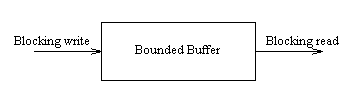
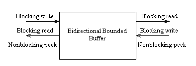
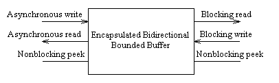
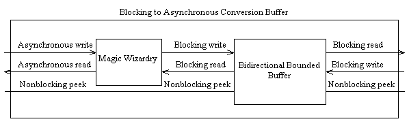
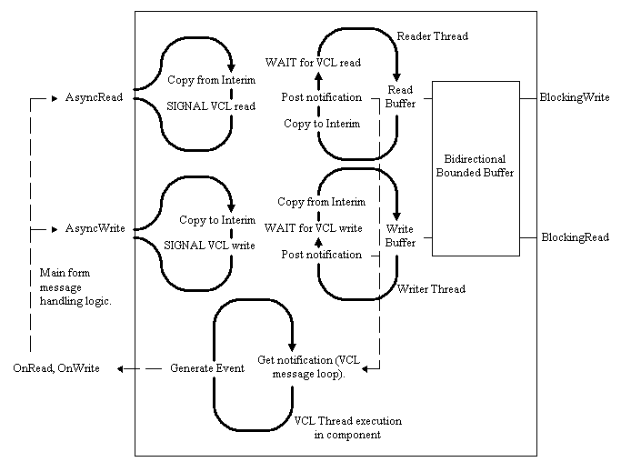

Chapter 10. I/O and data flow: from blocking to asynchronous and back.
In this chapter.
VCL Thread
differences, and I/O Interface design.
With worker threads, it makes sense to make I/O blocking, since on the
whole, blocking I/O is simplest. From the point of view of a thread using
an I/O resource via blocking calls, success or failure is immediately apparent
after making the I/O call, and the program logic never has to worry about
the period of time between the I/O operation being invoked and it being
completed.
Operations involving the VCL thread are typically not allowed to block
for long periods of time: the thread should always be able to process new
messages with a minimum of delay. On the whole disk I/O tends to be blocking,
since the delays involved are short from the point of view of the end user,
but all other I/O operations tend to be asynchronous, especially operations
involving communication between threads, processes, or machines, since
the length of the delays involved can not be predicted in advance. The
benefit of asynchronous operations, as previously discussed, is that the
VCL thread always remains responsive to new messages. The main disadvantage
is that the code executing in the VCL thread has to be aware of the completion
status of all pending I/O operations. This can become quite complicated,
involving the storage of potentially large amounts of state. Sometimes
this involves constructing a state machine; especially when implementing
well defined protocols such as HTTP, FTP or NNTP. More often, the
problem is simple, and has to be solved as a one off. In such cases
an ad-hoc solution will suffice.
When designing a set of data transfer functions, this difference has
to be borne in mind. Taking communications as an example, the most commonly
supported generic set of operations on a communications channel are: Open,
Close,
Read
and Write. Blocking I/O interfaces offer these facilities as simple
functions. Asynchronous interfaces offer the four basic functions, and
in addition, they will provide up to four notifications, whether
they be by call back or by event. These notifications indicate
either that a previous pending operation has completed, or that it is possible
to repeat the operation, or a mixture of both. An example interface might
be:
-
An Open function, and an associated OnOpen event, which indicates
that the open has completed, and reports success or failure.
-
A Read function, and an associated CanRead (or OnRead)
event. The event typically indicates that a call to Read will read some
new data, and/or that more data has arrived since the previous Read.
-
A Write function, and an associated CanWrite (or OnWrite)
event. The event typically indicates that a call to Write will write more
data, and/or that some of the data in the previous Write has been sent,
resulting in buffer space available for more Write operations. Depending
on the semantics, this event might or might not be triggered after a successful
call to Open.
-
A Close function, and an associated OnClose event. The event
typically indicates that the communications channel has finally been closed,
and that no more data can be sent or received. This event normally exists
in situations where it is possible to read data from the far end of a communications
channel after calling Close, and tends to work well with communication
set up and tear down mechanisms that use a three way handshake (e.g. TCP).
Roadmap.
Before proceeding further on this chapter, it seems appropriate to review
the existing mechanism for data transfer between threads, and to outline
methods by which this will be extended. If nothing else, it may persuade
some readers to complete this chapter without giving up, despite that fact
that there is a lot of code to be studied. The most important point to
be made at this juncture is that many of the implementation details, whilst
useful for those wishing to write a functional program embodying these
techniques, are not of prime importance to those wishing to gain a fundamental
understanding of the issues described. So far, the only data transfer mechanism
we have seen is the bounded buffer, diagrammatically represented thus:

In this chapter various extensions to this buffer will be demonstrated.
The first couple of modifications will be fairly simple: to place two buffers
back to back, and add a non-blocking peek operation on both sides of the
resultant bi-directional buffer.

So far, so good. There should be no real surprises for any readers at this
point, and all those who have managed to follow up to this point should
have no real trouble implementing such a construction. The next modification
is far more ambitious: instead of making all read and write operations
on the buffer blocking, we will make one set of operations asynchronous.

Specifically, we will create a component which converts blocking operations
into asynchronous ones, and vice versa. In its default incarnation, it
will simply encapsulate read and write operations on the bi-directional
buffer, but future implementors might like to override this functionality
to convert different I/O operations between blocking and asynchronous semantics.

The question here is: Why? The answers should be obvious: If we can make
a buffer that provides bi-directional communication between two threads,
where one thread uses blocking operations, and the other thread uses asynchronous
operations, then:
-
We can use it to communicate between the VCL thread and the worker threads
in our application without blocking the VCL thread.
-
All the complexity will be hidden inside the buffer code: no magic message
numbers, no use of synchronize, no publicly visible critical sections.
-
It will perform flow control between the VCL thread and worker threads;
a task not yet possible.
-
It can be used as an "off the shelf" solution for communication between
the VCL thread and other threads by any old idiot who has no idea about
synchronization problems.
Implementing
a blocking to asynchronous conversion component.
The component we will create assumes that only one VCL thread is running,
and consequently, an asynchronous interface will be provided for only one
thread. The blocking operations provided by this buffer will operate under
exactly the same limitations as those present in the bounded buffer example
of the previous chapter, and hence, any number of blocking threads will
be able to access the blocking interface concurrently. Just as the bounded
buffer allowed simple Get and Put operations involving only one element,
the blocking to asynchronous buffer (henceforth called called the BAB)
will also allow simple operations involving only one element. The semantics
of the interface will be:
-
Creation: Upon creation, the BAB component will create the required
internal buffering data structures and threads, and will generate an OnWrite
event to indicate that data may be written to the buffer by the VCL thread.
-
Reading: The BAB component will provide two read functions; BlockingRead
and AsyncRead. BlockingRead will be used by worker threads, whilst AsyncRead
will be used by the VCL thread.
-
Read Notifications: The BAB will provide an OnRead event to the
main VCL thread whenever an asynchronous read operation is likely to succeed,
i.e., data is waiting to be read by the VCL thread. Since this particular
component only deals in reading or writing single pointers it may be assumed
that only one item can be read per notification, and the VCL thread should
wait for a further notification before attempting to read again.
-
Writing: The BAB will provide two functions; BlockingWrite and AsyncWrite.
BlockingWrite will be used by worker threads, whilst AsyncWrite will be
used by the VCL thread.
-
Write Notifications: The BAB will provide an OnWrite event to the
main VCL thread whenever an asynchronous write operation is likely to succeed,
i.e., there is free buffer space into which an item may be written. Again,
a one to one relationship holds between notifications and successful writes,
and the VCL thread should attempt exactly one write before waiting for
another notification.
-
Peek operations: Any thread will be able to peek the buffers to
ascertain how many entries are free or used in the buffer in a certain
direction. This operation may be useful for worker threads in order to
determine whether a BlockingRead or BlockingWrite operation will in fact
block. The VCL thread should not use these functions to determine whether
a read or write is likely to succeed, and should depend on notifications
instead.
Adding peek
operations to the bounded buffer.
Here
is an improvement to the bounded buffer to allow peek operations. Notice
that although it is possible to read the count on semaphores during certain
operations, I have chosen to maintain the counts manually using a couple
of extra variables FEntryCountFree and FEntryCountUsed. A couple of extra
methods have been provided to read these variables. Many Delphi programmers
would immediately think of exposing these attributes of the bounded buffer
as properties. Unfortunately, we have to bear in mind that the synchronization
operations required to access these variables might fail. Rather than return
counts of -1 in an integer property, it seems more appropriate to leave
the peek operations as functions, thus informing the programmer that some
work is required to access the required data, and that the function might
fail. Some might argue that given this rationale, it would have been sensible
to also code the Size attribute of the buffer as an explicit reader function.
This is very much a matter of style, since the size of the buffer can be
read directly without any synchronization being required.
Creating a bi-directional
bounded buffer.
This operation is almost completely trivial, and requires no complex explanation.
I have implemented it as a simple encapsulation of two bounded buffer objects.
All the operations supported by the bounded buffer are also supported by
the bi-directional bounded buffer, with the small modification that the
threads using this object must specify which side of the buffer they wish
to deal with. Typically, one thread will deal with side A, and another
will deal with side B. Here
is the source. This class implements the functionality described pictorially
in the diagram above representing the bi-directional bounded buffer.
The Blocking
to Asynchronous buffer in detail.
Having done all the preparatory work required, the BAB can now be explained
in more detail. The BAB contains a bi-directional buffer, and two threads,
one reader and one writer. The reader and writer threads perform read and
write operations upon the bounded buffer on behalf of the VCL thread. The
execution of all the threads can be represented pictorially, with only
minimal abuse of existing conventions:

This diagram looks rather daunting, so it is probably easiest to present
a worked example. Let us consider the case where a worker thread performs
a blocking write to the BAB.
-
The worker thread performs a blocking write.
-
The BAB reader thread is currently blocked trying to read from the Bi-directional
buffer. As a result of the write, it becomes unblocked, and performs a
successful read.
-
It copies the data read into an interim buffer local to the thread class,
and issues a data flow event, handled by the BAB.
-
The BAB data flow event handling code, executing in the context of the
reader thread, posts a message to its own window handle indicating that
data has been read by the reader thread.
-
The reader thread then waits on a semaphore which will indicate that the
data has been read by the main VCL thread.
-
Some time later, the main VCL thread processes outstanding messages for
the component, in the same way as for all components with a window handle.
-
Amongst those messages waiting for the component is the notification message
posted by the reader thread. This message is handled, and generates an
OnRead event for the component.
-
The OnRead event is handled by the logic in the rest of the application
(probably the main form), and this will likely result in the VCL thread
trying to read data.
-
The VCL thread calls the AsyncRead method of the BAB.
-
AsyncRead copies the data out of the interim buffer and returns it to the
VCL thread. It then releases the semaphore that the reader thread is blocked
on, allowing it to try and perform another read operation on the bi-directional
buffer.
The BAB performs in exactly the same manner when writing. The write is
performed asynchronously by the VCL thread, the BAB internal writer thread
is woken up and performs a blocking write on the bi-directional buffer,
and once that write completes, the VCL thread is notified via an event
that more write operations may be attempted.
In essence, the interface between blocking and asynchronous operation
via message posting is identical to that introduced informally in earlier
examples. The difference with this component is that the details are encapsulated
from the end user, and the problem is solved in a more formal, well defined
manner.
Here is the code
for this component. Several points can be profitably noted. On the
whole, TThread descendants make little use of inheritance. However, in
this particular case, the reader and writer threads have a large amount
of common functionality, which is implemented in a base class, TBlockAsyncThread.
This class contains:
-
The interim buffer, which holds just a single pointer.
-
A critical section to allow atomic access to the interim buffer.
-
A pointer to the bi-directional buffer to use for blocking operations.
This is set by the BAB to the bi-directional buffer used internally in
the BAB.
-
An event, "OnDataFlow", which is handled by the BAB component.
-
An idle semaphore. This semaphore is used to implement the "Wait for VCL
write" and "Wait for VCL read" operations in a generic manner.
The base thread class also implements a bare minimum of common functionality:
Thread creation, destruction, and the event trigger for the OnDataFlow
event. The base class has two children: TBAWriterThread and TBAReaderThread.
These implement the actual thread execution methods, and they also provide
read and write methods which will be indirectly executed by the VCL thread.
The BAB component itself stores the bi-directional buffer and the two threads.
In addition, it also stores a window handle FHWND, which is used for the
specialized message processing.
Construction of the BAB.
Lets now have a look at the implementation. Upon creation, the BAB component
allocates a window handle using AllocateHWnd. This is a useful function
mentioned in Danny Thorpe's book "Delphi Component Design". The BAB component
is rather unusual in that it requires a window handle to perform message
processing, but it is not really a visual component. It is possible to
give the BAB component a window handle by making it a child of TWinControl.
However, this is not really the appropriate parent for the component, because
it isn't a window control. By using AllocateHWnd, the component can perform
its own message processing without also carrying along a large amount of
unneeded extra clutter. There is also a small improvement in efficiency,
since the message handling procedure in the component performs only the
minimal amount of processing required, dealing with one particular message,
and ignoring all others.
During creation, the BAB component also sets up a couple of event handlers
from the threads to the component itself. These event handlers execute
in the context of the reader and writer threads, and perform the notification
posting that interfaces between the reader and writer threads, and the
main VCL thread.
As a result of component creation, the threads are set up. All of the
work here is common to both reader and writer threads, and is thus in the
constructor for TBlockAsyncThread. This simply sets up a critical section
required to maintain atomic access to the intermediate buffer in each thread,
and it also creates the idle semaphore for each thread, which ensures that
the thread waits for the VCL thread to read or write data before proceeding.
Destruction of the BAB.
Destruction of the component is slightly more complicated, but uses principles
discussed in previous chapters. The bi-directional buffer contained in
the BAB is similar to the bounded buffer discussed in the previous chapter,
in that destruction is a three stage process. The first stage is to unblock
all threads performing I/O operations on the buffer via a call to ResetState.
The second stage is to wait for all threads to terminate, or at least be
in a state where they will not perform any more operations on the buffer.
Once this condition has been met, the third stage can commence, which is
destruction of the physical data structures.
The destruction of the BAB thus works along similar lines:
-
The state for the BAB is reset. This involves terminating both internal
threads, and then resetting the state for the bi-directional buffer, thus
unblocking any buffer operations in progress.
-
The destructor for both threads is called. This releases each thread's
idle semaphore, and then waits for the thread to complete before destroying
the critical section and idle semaphore. Some readers may be surprised
that a thread destructor can call WaitFor. This is OK, provided that we
can be sure that a thread never calls its own destructor. In this case,
the destructor for the reader and writer threads will be called by the
VCL thread, so there is no deadlock problem here.
-
The reader and writer threads are set to nil to allow multiple calls to
ResetState.
-
The bi-directional buffer is destroyed, and the window handle is deallocated.
Since the threads are internal to the BAB, these cleanup procedures have
the highly desirable effect that the destructor of the BAB can unblock
and clean up all the threads and synchronization objects internal to the
component without the component user ever being aware of the potential
ordering problems inherent in the cleanup operation. A simple call to Free
the BAB will suffice. This is obviously desirable.
Despite this, the component still exposes its ResetState method. The
reason for this is that the component has no control over other worker
threads that may be performing blocking operations on the buffer. In situations
like this, the main application must still terminate the worker threads,
reset the BAB state, and wait for the worker threads to terminate before
physically destroying the BAB.
An example program using
the BAB.
Here is yet another variant on the prime number theme. The main
form prompts the user for two numbers - the start and end of a range.
These numbers are submitted, are put into a request structure, and a pointer
to this structure is asynchronously written into the BAB. At some later
point the worker
thread performs a blocking read, and retrieves the request. It then
spends a variable amount of time processing the request, determining which
numbers in the range are prime. Once it has finished, it performs a blocking
write, passing a pointer to a string list full of results. The main form
is notified that it has data to read, and it then reads the string list
back out of the BAB, and copies the results into a memo.
There are two main points to note in the code for the main form. The
first is that the user interface is elegantly updated in line with the
flow control for the buffer. After a request has been submitted, the request
button is disabled. It is only re-enabled when the form receives an OnWrite
event from the BAB indicating that more data can safely be written. The
current implementation sets the Bi-directional buffer size to 4. This is
sufficiently small that the user can verify that after sending four requests
that take a long time to process, the button remains permanently disabled
until one of the requests has been processed. Likewise, if the main form
cannot process read notifications sufficiently rapidly from the BAB, the
worker thread will be blocked.
The second point to note is that when the main form is destroyed, the
destructor uses the ResetState method of the BAB as described earlier to
ensure that thread cleanup and buffer deallocation occurs in an orderly
manner. Failure to do this might result in an access violation.
The worker thread code is fairly simple. It is worth noting that since
it uses blocking read and write operations, it only uses CPU when it is
actively processing a request: if it cannot receive a request or send a
reply, due to congestion in the buffer, then it is blocked.
We've achieved our goal!
A small recap of what has been achieved with this component:
-
Seamless data transfer between VCL and worker threads.
-
All synchronization subtleties hidden inside the BAB (with the exception
of ResetState subtleties).
-
End to end flow control between VCL and worker threads.
-
No busy loops or polling: CPU is used efficiently.
-
No use of synchronize. Threads are not blocked unnecessarily.
The reader might be forgiven for thinking that his troubles are over...
Have you spotted the memory
leak?
Throughout both the previous chapter and this chapter, a major issue has
been side-stepped; Items in the various buffers we have designed are not
destroyed properly when the buffer is destroyed. When initially designing
these buffer structures, an approach similar to a TList was adopted: The
list or buffer simply provides storage and synchronization. Correct object
allocation and deallocation is the responsibility of the threads using
the buffer.
This simplistic approach has major difficulties. In the general case,
it is exceedingly hard to ensure that the buffer is empty in both directions
before it is destroyed. In the example above, which is the most simple
use possible of the buffer, there are four threads, four mutexes or critical
sections, and six semaphores in the entire system. Determining the state
of all the threads and orchestrating a perfectly clean exit in such situations
is obviously not possible.
In the example program this was resolved by keeping a count of how many
requests are un-serviced at any one time. If we have received as many replies
as requests, then we can be sure that the various buffers are empty.
Memory leak avoidance.
One approach is to allow the various buffers to implement call-backs which
destroy the various objects contained in those buffers at cleanup time.
This will work in the general case, but it is open to abuse, and the implementation
of such a scheme is likely to get messy in practice.
Another possibility is to have a general buffer management scheme which
keeps track of specific types of objects, keeping note of when they enter
and leave the various buffers in the application. Again, the implementation
of this is likely to get rather messy, and would require a potentially
complicated reference tracking mechanism to do a job that should really
be simple.
The best solution is to make the buffer structures analogous to TObjectList;
i.e. all items put into the buffers are classes. This then allows
thread performing the clean up operation to call an appropriate destructor
on all the items in the buffer. Even better, by using class reference types,
we could automatically perform run time type checks on objects passing
through the buffer, and produce a type safe set of buffers.
The implementation of a scheme such as this is left as an exercise to
the reader. No changes are required to the basic synchronization mechanisms,
but the signatures for the read and write procedures will require modification,
as will the implementation of the destructors for the bounded buffer, and
the thread classes.
Peek problems.
When implementing the bi-directional buffer, it was still possible to provide
a reasonably consistent mechanism for peeking buffers to see how many items
were in them. It is possible that when peeking the bi-directional buffer,
the free and used counts might not always add up to the same figure, since
both operations cannot be performed atomically. However, it is guaranteed
that with only one reader and writer thread in each direction, peeks can
be used as a reasonable indication that an operation would succeed without
blocking.
With the asynchronous buffer, the problem is worsened in that it is
not possible to obtain a guaranteed good peek on the buffer state with
the current implementation. This is because there are essentially two buffers
in each direction, the bounded buffer and the interim, single item buffer.
No mechanism is provided for globally locking both buffers to atomically
determine the status of both of them.
The component does make a stab at providing some peeking ability by
providing a rough count of items in transit in the buffers. This is deliberately
vague so as not to mislead the programmer into thinking that the results
might be accurate! Is is possible to do better than this?
Doing away with
the intermediate buffer.
The best way to improve the situation is to remove the intermediate buffer
entirely. With a little thought this is in fact possible, but it requires
a rewrite of all the buffering code. We would need to implement a new bounded
buffer with slightly different semantics. This new bounded buffer would:
-
Implement a blocking read and write on one side as before.
-
On the other side, implement an asynchronous read and write (a simple success/failure
without blocking), and in addition implement a couple of "Block Until"
methods. These methods would block a thread until a read or write operation
could be guaranteed to succeed.
In this manner, the reader and writer threads could be used to send notifications
by blocking until an operation was possible, and the VCL thread could perform
the actual read and write operations upon the bounded buffer, without blocking.
With these semantics, we then have only one set of buffers that needs
to be managed, and it is comparatively easy to provide an atomic peek operation
that provides accurate results. Again, this is left as an exercise to the
reader...
Miscellaneous limitations.
All the buffering structures introduced in the last couple of chapters
have assumed that the programmer is sending pointers to valid memory, and
not NIL. Some readers may have noticed that some of the code in the reader
and writer threads implicitly assumes that NIL is an appropriate null value
which will not be sent through the buffer. This could trivially be remedied
with some buffer validity flags, but this is at the expense of cluttering
the code somewhat.
Another more theoretical limitation is that the end user of this component
might conceivably create a very large number of buffers. The Win32 programming
guidelines for threads state that it is normally a good idea to limit the
number of threads to about sixteen per application, which would allow eight
BAB components. Since there is no limitation of the number of worker threads
that perform blocking operations on the BAB, it would seem appropriate
to have only one BAB per application and to use it to communicate between
the one VCL thread and all the worker threads. This of course assumes that
all the worker threads are performing the same job. On the whole, this
should be acceptable because most Delphi applications should be spawning
just a handful of threads for time consuming background operations.
The flip side
of the coin: Stream buffers.
So far, all the buffering structures discussed have implemented buffers
of pointers for data transfer. While this is useful for discrete operations,
most I/O operations involve streams of data. All the buffering structures
have a roughly equivalent counterpart involving streams, which, by and
large, can be treated in a similar manner. There are a few useful differences
that are worth pointing out:
-
When buffering streams, it is not possible to use semaphores to keep track
of a concrete number of items in the buffer. Instead, semaphores are used
in a binary fashion, that is with counts of only 1 or 0. When reading
or writing with stream buffers, a calculation must be made as to whether
the buffer will be filled or emptied by the operation. If one of these
occurs, then as many bytes are transferred as possible, and the thread
is then blocked if appropriate.
-
Since the blocking status of reader and writer threads is calculated on
the fly, state has to kept, recording the blocked or running status of
the threads. This state is then used in subsequent read or write operations
in order to calculate whether "peer" threads on any particular read or
write operation should be unblocked. This complicates the blocking and
unblocking calculations somewhat, but the overall principle is the same.
-
Notification schemes for stream buffers are similarly modified. The current
notification scheme sends one notification for every read or write. BAB
components operating on streams send notifications based on whether the
intermediate buffer (or its equivalent) is no longer full or empty. Since
notifications can be regarded as the asynchronous equivalent to Signal
or ReleaseSemaphore operations, this modification is analogous to the points
above.
There is plenty more that might be mentioned on this subject. If the reader
wishes to see a worked example of stream buffering, he should consult the
code in the final chapter.
[Contents] [Previous][Next]
© Martin Harvey
2000.